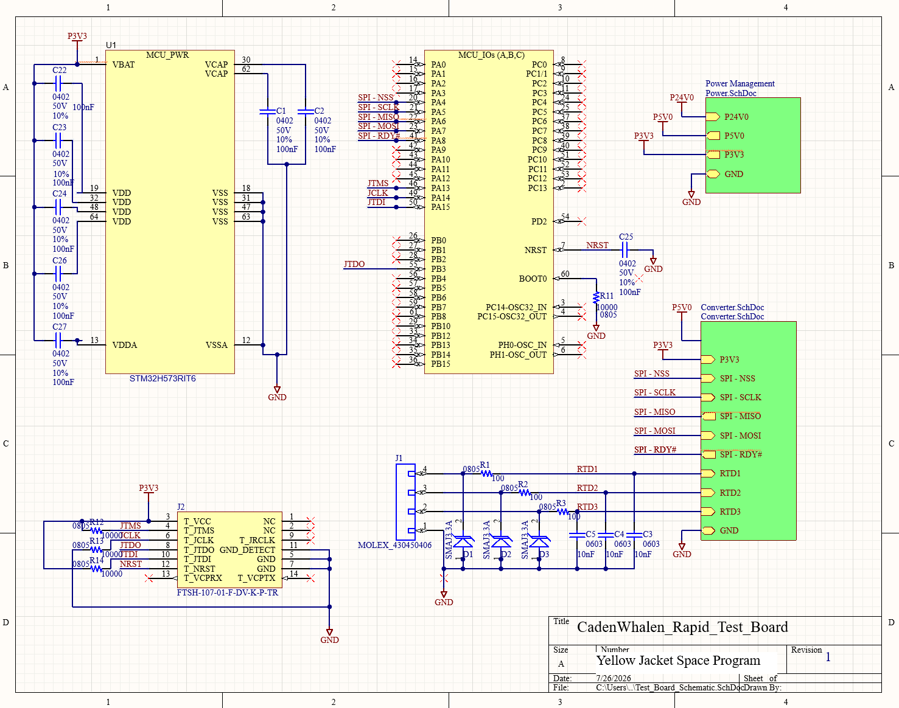
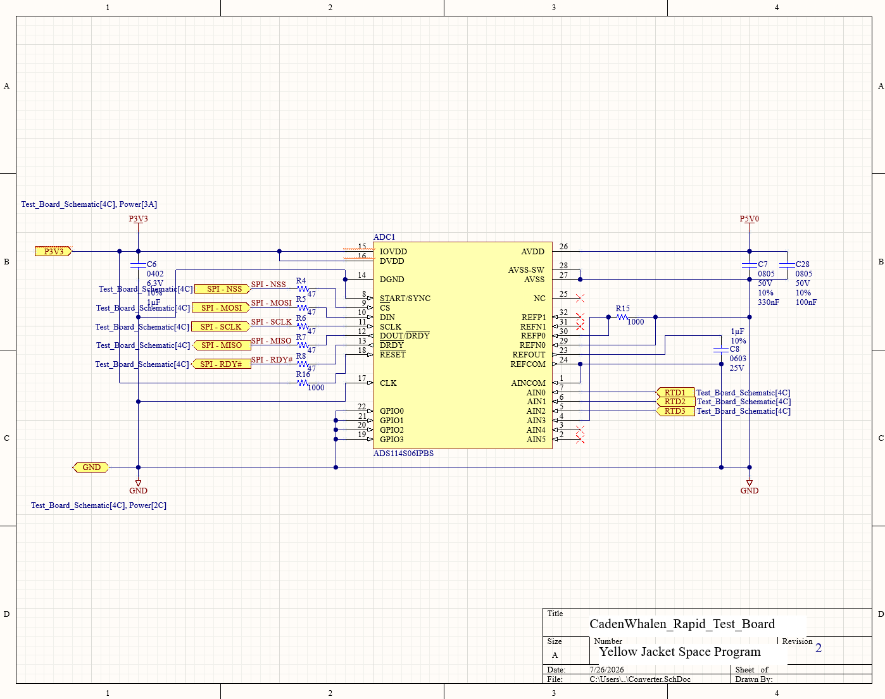
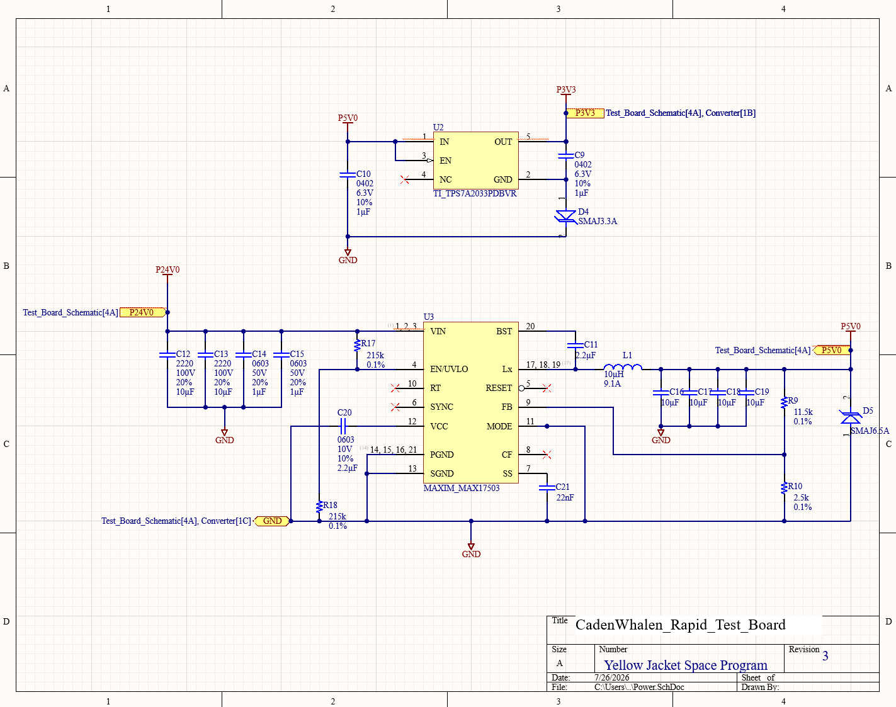

Project Overview
Welcome to the up-to-date showcase of my ECE 1100 Discovery Project. In this project, I collaborated with the Yellow Jacket Space Program to design, develop, and implement a rapid test board for diagnosing and addressing a faulty sensor. Below is a detailed overview of the skills gained as well as the project's conceptualization, design process, development, technical challenges, progress, and future plans.
The Main Idea
At the start of the summer semester, I was tasked with designing and developing a rapid test board for the Yellow Jacket Space Program. My primary responsibility was to translate a set of system requirements into electrical schematics and a printed circuit board (PCB) layout before assembling the corresponding test board and any necessary wiring harnesses.
The project consisted of five primary design requirements. First, the board had to accept a 24 V input from an external power supply while incorporating electrostatic discharge (ESD) protection, overvoltage and undervoltage protection, appropriate power filtering, and voltage regulation. This voltage regulation aimed to provide stable 5 V and 3.3 V for the various onboard components. Second, the design required the use of a STM32H573RIT6 microcontroller as the primary processor, including a JTAG programming interface and an ADS114S06 analog-to-digital converter (ADC). Third, I was responsible for selecting one of the following sensor types for testing: a resistance temperature detector (RTD), platinum temperature (PT) sensor, thermocouple (TC), differential pressure sensor, or solenoid valve. Fourth, the board had to implement the Serial Peripheral Interface (SPI) protocol to enable communication between the microcontroller and the ADC. Finally, the design needed to be mechanically and electrically compatible with the existing Yellow Jacket Space Program avionics system, which could require custom mounting hardware and wiring harnesses.
Project Progress
As of the Discovery Showcase, I was able to successfully complete four of the five design requirements. I first fully implemented the power system, making sure to allow the board to accept a 24 V input while also providing regulated 5 V and 3.3 V power rails through the integration of a MAX17503 step-down converter and a TPS7A2033 low-dropout (LDO) regulator. The power system design also incorporates essential protection requirements, including undervoltage lockout (UVLO), electrostatic discharge (ESD) protection, and input/output filtering to improve system reliability.
After designing a functional power system, I was able to successfully integrate the major electronic devices, including an STM32H573RIT6 microcontroller as the primary processor, a standard JTAG programming interface for debugging and firmware development, and an ADS114S06 analog-to-digital converter (ADC) for sensor data acquisition. During this step, I decided to center my test board design to support a resistance temperature detector (RTD), with the sensor inputs routed directly into the ADC. Finally, the Serial Peripheral Interface (SPI) protocol enabled communication between the microcontroller and ADC.
Successes and Failures
The following section represents the various successes and failures that I recorded throughout the development of the rapid test board:
Successes
- Properly set up Altium and connected to the YJSP network
- Learned how to navigate and use Altium to create designs
- Completed a high-level block diagram of the rapid test board
- Completed the digital schematic diagram of each subsystem of the rapid test board
- Fully integrated the subsystems together with proper functionality
- Set up and updated the ECE 1100 Discovery Project Showcase throughout the course of the semester
Failures
- Difficulty following the strict deadlines I laid out for myself at the beginning of the semester
- Did not properly communicate with YJSP mentors throughout the project
- Considerably challenging to learn Altium through websites and videos
- Initial subsystem integrated design had to be completely redesigned to match requirements
- Significantly overestimated the 3D circuit board design process
ECE Skills Gained
Working on this project has enabled me to learn and expand upon many new skills outside of class. The main avionics skills that I developed over the course of the summer semester can be found below:
- PCB layout design
- Conversion from analog signal to digital format
- Creation of high-level block diagrams
- Implementation of circuit technology skills
- Design for the application of avionics integration
- Utilization of serial peripheral interface
- Implementation of electrostatic discharge & overvoltage/undervoltage protection
- Inclusion of proper filtering
Final Thoughts & Future Plans
Looking back, I am satisfied with the progress that I was able to make this semester. I knew this project would be ambitious at the start of the semester, but I was able to get a considerable portion of it accomplished while adhering to all the requirements. Currently, I am still in the process of converting digital schematics into a 3D circuit rendering. My immediate next steps are to finalize the circuit design, confirm the design with YJSP, order the corresponding components, assemble the rapid test board, and pass testing. Overall, there are many steps left to complete for this project, but I believe that the most challenging sections have been completed. I am happy to have learned so much this summer semester, and I cannot wait to finish this project early in the fall.
Project Gallery

Main Processing Schematic

Analog to Digital Converter Schematic

Power System Schematic